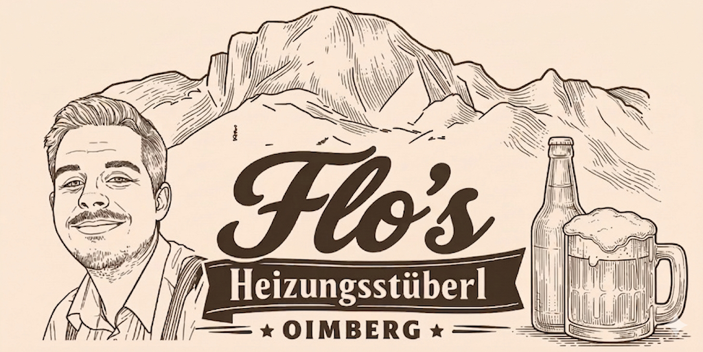
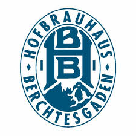
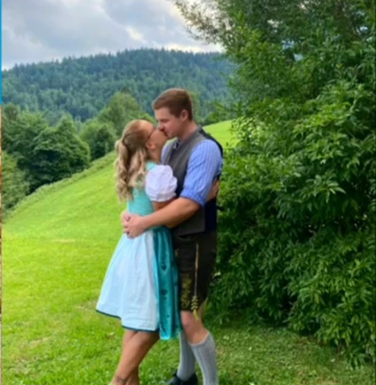

Stammtisch
Platz für maximal 30 Personen in der Heizung — reserviere deinen Tisch.

Mittwochs: Goaßenmaß‑Special — Eck Michi mixt die legendäre Goaßenmaß für echte Kenner.
Typisch bayerische Küche, herzliche Atmosphäre und jede Menge Aperol. Laura Berg kocht — gute Laune inklusive. Wanderer sind herzlich willkommen auf ein kühles Bier.
Aperol im Stüberl, Untersberg im Blick: So schmeckt der Oimberg‑Sommer

Laura und Flo — die Köpfe hinter dem Heizungsstüberl. Deftige Küche, warme Heizung, laute Musik und ein Herz für Wanderer.

Platz für maximal 30 Personen in der Heizung — reserviere deinen Tisch.
Feiern im Freien für bis zu 150 Personen — Hochzeitsbuchungen möglich.
Flo: @floaschauer • Laura: @_lauramaria__